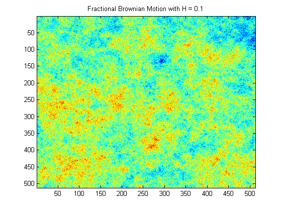
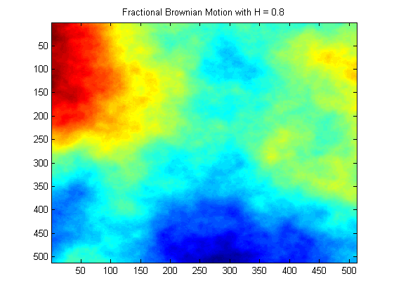

| FRACLAB Functions |
|
Generates a 2D Fractional Brownian Motion (fBm) using an incremental Fourier Method for processes with stationary increments of order (0,1) and (1,0)
FBM = synth(N,H)
FBM = synth(...,W,Wx,Wy)
FBM = synth2(N,H) Generates the fractional brownian motion, FBM, using a sample size, [N,N], and Holder exponent, H. The parameter N is a positive integer and the parameter H is a real value in (0:1) that governs both the pointwise regularity and the shape around 0 of the power spectrum.
FBM = synth2(...,W,Wx,Wy) Generates the fractional brownian motion, FBM, using a specific driving white zero-mean Gaussian noise, [W,Wx,Wy]
N = 512; H = 0.1;
fbm = synth2(N,H);
figure; imagesc(fbm); title('Fractional Brownian Motion with H = 0.1')

N = 512; H = 0.8;
fbm = synth2(N,H);
figure; imagesc(fbm); title('Fractional Brownian Motion with H = 0.8')

| |
srmpmidpoint | wave1f | |